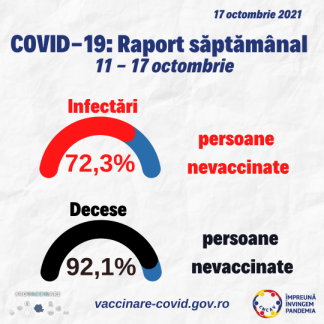

The Bayes rule and vaccination benefit
Contents
The Bayes rule and vaccination benefit¶
The Bayes rule¶
The Bayes rule is a fundamental formula in statistics which allows to invert the order of conditional probabilities.
It can be written as follows:
Note
This comes from the expansion of an intersection:
“To have both A and B, first obtain one of them, then the second one given that you have the first”
We express \(P(B|A)\) in terms of \(P(A|B)\), i.e. the conditional terms are in opposite order. This is the hallmark of the Bayes rule. We’ll see below a nice example of using this in real life.
Some data from the news¶
Suppose you browse the news and stumble upon the following data:

The rates of infection and death seem much higher for non-vaccinated people:
Infections: 72.3% non-vaccinated vs 27.3% vaccinated
Deaths: 92.1 % non-vaccinated vs just 7.9% vaccinated
Is it really the case? Are these ratios really accurate?
Note: This post is not about vaccination. It is about using the Bayes rule to make sense of some percentage values reported in mass-media. Please don’t consider it either pro or anti vaccination.
Intuition¶
These numbers don’t tell the whole story. We may have an intuition about this if we ask the following question:
“Is the ratio 72.3% vs 27.3% a lot?”
(i.e. the ratio of non-vaccinated to vaccinated people in newly infected).
It actually depends on the vaccination percent of the general population:
If the general population is also 72.3% not vaccinated and 27.7% vaccinated, then the share of vaccinated in new infections is the same as the share of vaccinated in general, which means than vaccination neither helps nor hinders.
If the general vaccination rate is higher than the 27.7%, then we have a smaller slice of vaccinated people in new infections compared to the general population. This means vaccination provides a benefit.
If the general vaccination rate is smaller than 27.7%, then we have a larger slice of vaccinated people in new infections compared to the general population. This means vaccination is detrimental.
![Some Covid stats from a news headline(images/BayesRuleVax_IsFourALot.jpg “Context matters”)
So, we must consider the vaccination percentage in the whole population as well. Let’s see how the Bayes rule comes to the rescue here.
Problem definition¶
What is the proper name of the probability whose value is 72.3%?
This is the number of non-vaccinated people in every 100 new infection cases. Therefore, it is a conditional probability, whose name is “probability of being non-vaccinated given that you are infected”, \(P(\textrm{non-vaccinated | infected})\).
Similarly, 27.7% is the conditional probability of being vaccinated if you are infected.
In the fashion of Bayes rule, we write them as:
“NV” means “non-vaccinated”, “V” means “vaccinated”, and “I” means infected.
It is important to recognize these as conditional probabilities. They are conditional because they are computed for every 100 new infections, i.e. restricted only to these cases.
Now, the question we really want to know is the following:
“How much does vaccination help in reducing the probability of infections?”
This means the ratio of infected-if-vaccinated to infected-if-non-vaccinated:
Note the change in notation: we want I|V and I|NV, but what we have is actually the opposite, NV|I and V|I. This is exactly where the Bayes rule helps us.
Using the Bayes rule¶
Let’s apply the Bayes rule to compute \(P(I | V)\) and \(P(I | NV)\).
We have:
We want their ratio, and when dividing them the common term \(P(I)\) simplifies away:
The first term \(\frac{P(V | I)}{P(NV | I)}\) comes from our initial data and is equal to \(\frac{27.7\%}{72.3\%}\). In the second term, \(P(V)\) and \(P(NV)\) are the general vaccination and non-vaccination rate in the general population. The Bayes rule shows that we must consider them as well.
A quick search shows us that the vaccination rate around 17th October 2021 was around \(P(V) = 29.4\%\), which means \(P(NV) = 70.6\%\):

We can now evaluate our result:
The numbers show that vaccination reduces the risk of infection by a merely 8%, which is not much. This is much different than what you might have expected from reading the initial percentages (Infections: 72.3% non-vaccinated, 27.7% vaccinated)
How about the death rate?¶
Let’s redo the computations for the death rate. We replace I with D in the formulas (D stands for “Deceased”)
Vaccination reduces the risk of death by five times compared to non-vaccinated people. Great news and a major improvement. However, this may not be the actual ratio you expected from reading the original numbers (7.9% vs 92.1% means more than 10 times smaller, which is not the case).
In retrospect¶
In retrospect, what the Bayes rule does here is not really magic. We can rewrite our final result as the ratio of two ratios:
We have the ratio of \(\frac{P(V | D)}{P(NV | D)}\) to \(\frac{P(V)}{P(NV)}\), i.e. the ratio of vaccinated-to-not-vaccinated among the deceased compared to the same vaccinated-to-not-vaccinated ratio in the general population. This makes sense, now that we see it, and we could have guessed something like this from the initial intuition. However, one can easily be fooled by statistical numbers. It is great that the Bayes rule leads us nicely and rigorously to this result.